Measured scenario experiment
Which context produced the strongest experience?
Your judgment is the primary result. Evaluator scores support comparison but cannot select production content.
Evaluator selection: scenario-1-concept-only
Scenario 1 is the only candidate that reaches substantive interactive content at all, and it has the highest scores across every dimension (design 3, originality 2, craft 3, functionality 3, learning integration 3, replay 2), versus scenario 2 which never leaves its splash screen (confirmed non-functional across three separate progression attempts, scoring 1s across nearly every axis) and scenario 3 which is a fully functional but generically structured multiple-choice quiz with an actual state-management bug (recycled feedback text misreporting the previous question's numbers). While scenario 1's interactions are criticized as passive 'reveal' sequences rather than true manipulables, and one '+' control appears unresponsive, the pedagogical sequencing (equal groups → skip-counting → arrays) is sound, the array grid is genuinely laid out as rows/columns, and the art is coherent and legible. Critically, this candidate has real, if shallow, gameplay to diagnose and refine — there's an actual mechanic (even if it needs to become more active/tactile) to iterate on, unlike scenario 2 which offers nothing to refine (a broken shell) or scenario 3 which is confirmed to be a static answer-quiz with no path toward becoming a manipulable mechanic without a full rebuild. Given the task is to select the candidate with the most promising substantive experience for a bounded refactor, scenario 1 provides the clearest concrete target: convert the tap-to-reveal pot sequence into an actual drag/build interaction, fix the +/- control in 'Build my own,' and add visible feedback to the array-tapping stage. This is a bounded, well-scoped refactor opportunity, whereas scenario 2 requires diagnosing a totally broken state machine with zero information about intended interactions, and scenario 3 requires structurally replacing its entire quiz paradigm with a genuine builder mechanic — a much larger, less bounded rework.
Scenario 1 is the only candidate that reaches substantive interactive content at all, and it has the highest scores across every dimension (design 3, originality 2, craft 3, functionality 3, learning integration 3, replay 2), versus scenario 2 which never leaves its splash screen (confirmed non-functional across three separate progression attempts, scoring 1s across nearly every axis) and scenario 3 which is a fully functional but generically structured multiple-choice quiz with an actual state-management bug (recycled feedback text misreporting the previous question's numbers). While scenario 1's interactions are criticized as passive 'reveal' sequences rather than true manipulables, and one '+' control appears unresponsive, the pedagogical sequencing (equal groups → skip-counting → arrays) is sound, the array grid is genuinely laid out as rows/columns, and the art is coherent and legible. Critically, this candidate has real, if shallow, gameplay to diagnose and refine — there's an actual mechanic (even if it needs to become more active/tactile) to iterate on, unlike scenario 2 which offers nothing to refine (a broken shell) or scenario 3 which is confirmed to be a static answer-quiz with no path toward becoming a manipulable mechanic without a full rebuild. Given the task is to select the candidate with the most promising substantive experience for a bounded refactor, scenario 1 provides the clearest concrete target: convert the tap-to-reveal pot sequence into an actual drag/build interaction, fix the +/- control in 'Build my own,' and add visible feedback to the array-tapping stage. This is a bounded, well-scoped refactor opportunity, whereas scenario 2 requires diagnosing a totally broken state machine with zero information about intended interactions, and scenario 3 requires structurally replacing its entire quiz paradigm with a genuine builder mechanic — a much larger, less bounded rework.
Run summary
{
"checkpoint": "f172e1b",
"childId": "reina",
"concept": "multiplication as equal groups and arrays, connected to skip-counting and interpreted in word problems",
"model": "claude-sonnet-5",
"evaluatorModel": "claude-sonnet-5",
"selectedCandidateId": "scenario-1-concept-only",
"selectionReason": "Scenario 1 is the only candidate that reaches substantive interactive content at all, and it has the highest scores across every dimension (design 3, originality 2, craft 3, functionality 3, learning integration 3, replay 2), versus scenario 2 which never leaves its splash screen (confirmed non-functional across three separate progression attempts, scoring 1s across nearly every axis) and scenario 3 which is a fully functional but generically structured multiple-choice quiz with an actual state-management bug (recycled feedback text misreporting the previous question's numbers).\n\nWhile scenario 1's interactions are criticized as passive 'reveal' sequences rather than true manipulables, and one '+' control appears unresponsive, the pedagogical sequencing (equal groups → skip-counting → arrays) is sound, the array grid is genuinely laid out as rows/columns, and the art is coherent and legible. Critically, this candidate has real, if shallow, gameplay to diagnose and refine — there's an actual mechanic (even if it needs to become more active/tactile) to iterate on, unlike scenario 2 which offers nothing to refine (a broken shell) or scenario 3 which is confirmed to be a static answer-quiz with no path toward becoming a manipulable mechanic without a full rebuild.\n\nGiven the task is to select the candidate with the most promising substantive experience for a bounded refactor, scenario 1 provides the clearest concrete target: convert the tap-to-reveal pot sequence into an actual drag/build interaction, fix the +/- control in 'Build my own,' and add visible feedback to the array-tapping stage. This is a bounded, well-scoped refactor opportunity, whereas scenario 2 requires diagnosing a totally broken state machine with zero information about intended interactions, and scenario 3 requires structurally replacing its entire quiz paradigm with a genuine builder mechanic — a much larger, less bounded rework.",
"allGeneratedCandidatesRejected": false,
"refactorMove": "refine",
"totalInputTokens": 197525,
"totalOutputTokens": 91867,
"estimatedCostUsd": null,
"costNote": "Token usage recorded; pricing rates were not configured."
}scenario-0-control
Scenario 0 — current Sunny control
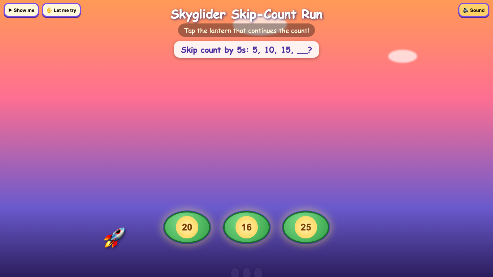
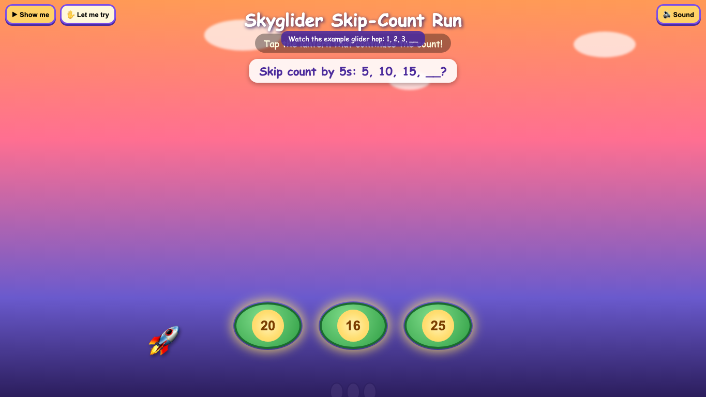
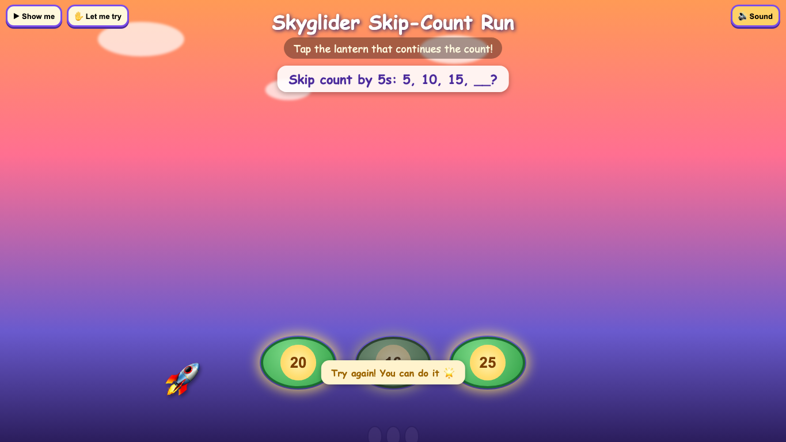
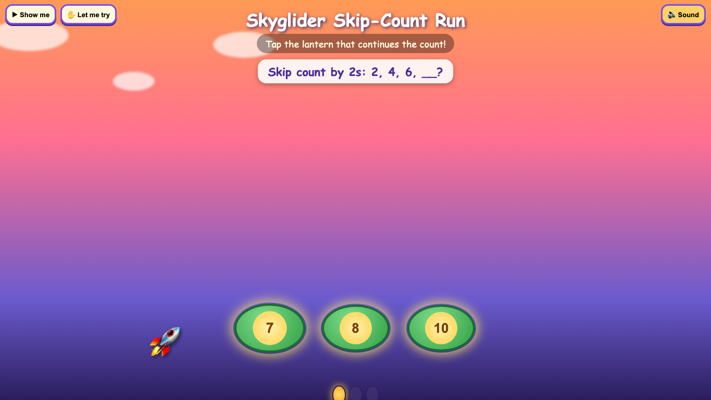
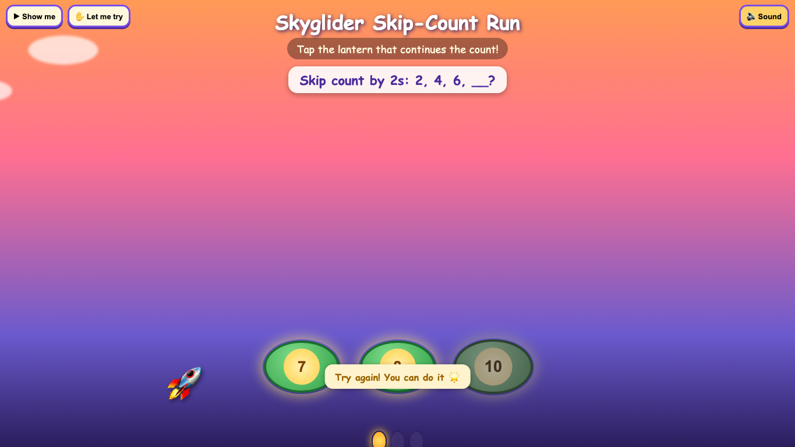
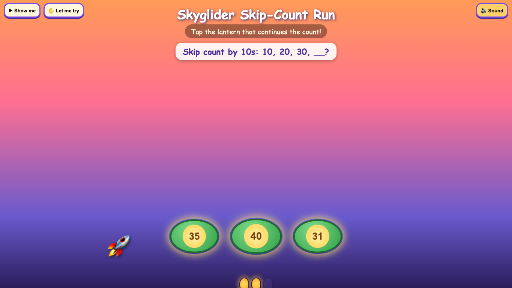
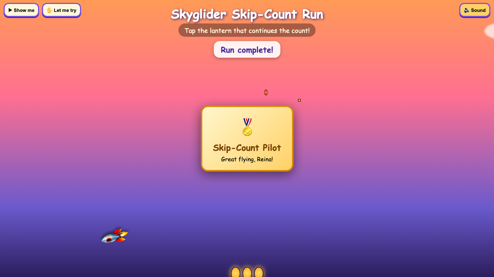
Evaluator judgment
{
"candidateId": "scenario-0-control",
"verdict": "mediocre",
"scores": {
"designQuality": 3,
"originality": 2,
"craft": 2,
"functionality": 2,
"learningIntegration": 2,
"replayAppeal": 2
},
"evidence": [
"Screenshots show three static green 'lantern' ovals with numbers floating above a gradient sky background - the rocket and clouds are pure decoration that never move or react to answers during the trace",
"Console log shows a 404 resource failure, indicating a broken asset (likely sound or an animation) that never loaded",
"The 'Show me' demo overlay just shows a text tooltip ('Watch the example glider hop: 1,2,3,__') overlapping the existing UI rather than an actual animated demonstration of skip-counting motion",
"Wrong answer (16) only triggers a generic 'Try again! You can do it' tooltip popup identical in style to any generic quiz - no visual consequence tied to the skip-count concept (e.g. no visual grouping, no lantern sequence lighting up)",
"Across 6 trace steps the rocket sprite at bottom-left never moves position at all, despite the game being framed as a 'run' - the reward screen just swaps in a medal card with no visible flight/travel payoff shown in the trace"
],
"critique": "On its surface this looks like the calibration-positive 'Skyglider Skip-Count Run,' but the actual trace reveals it is functionally identical to the rejected harbor quiz: three answer bubbles with numbers, a skip-count question in a text box, and a static decorative background that does not participate in the mechanic. The rocket that should visually 'run' or 'glide' along the sequence never moves across any of the five captured screenshots - it sits in the same bottom-left position from the first click through 'Run complete!' The only feedback for wrong/right answers is a floating text tooltip ('Try again!' / presumably a success toast), which is the same generic answer-button pattern seen in Moonlit Cargo and Rope-and-Peg. There is no array or equal-groups visual representation despite the concept description promising 'multiplication as equal groups and arrays' - the entire experience is skip-counting number selection, with no connection to arrays, groups, or word problems ever surfacing in the screenshots. The 'Show me' demo mode is just an overlapping text bubble, not an actual animated walkthrough, which suggests the tutorial mode is a stub. A 404 console error further suggests a missing asset (perhaps the promised glider animation or a sound file) that never loads, meaning part of the intended experience is silently broken. The completion badge ('Skip-Count Pilot... Great flying, Reina!') is unearned praise text pasted onto a static scene with no visual flight or dynamic culmination shown. This is polished-looking chrome with the same shallow structure the rubric explicitly warns against: decorative world, generic buttons, unearned payoff copy that outstrips what was actually demonstrated on screen.",
"nextMove": "pivot"
}scenario-1-concept-only
Scenario 1 — concept only
Selected for the bounded refactor


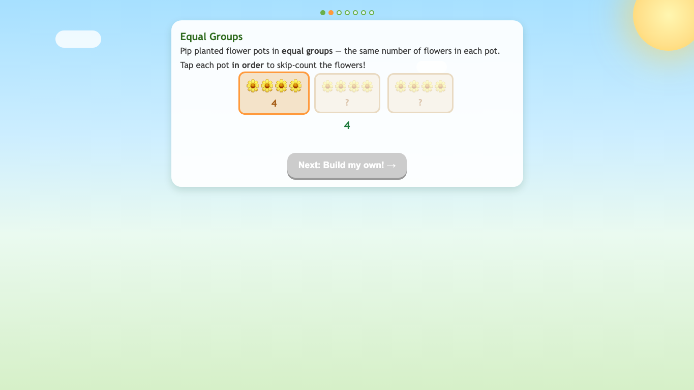
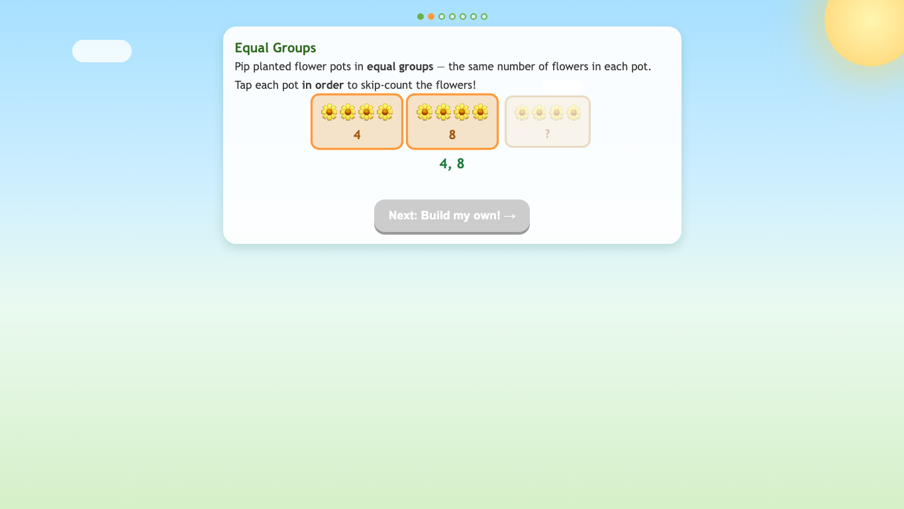
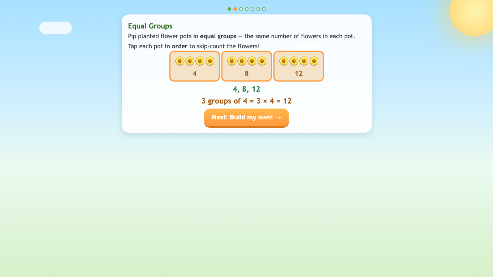
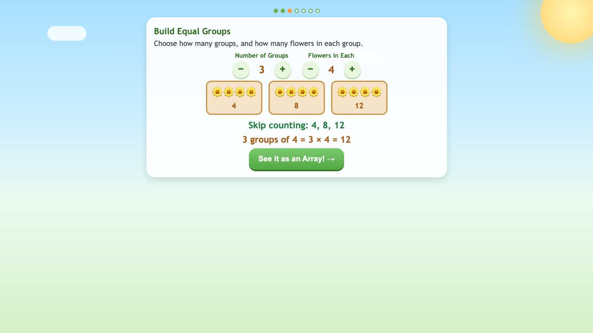
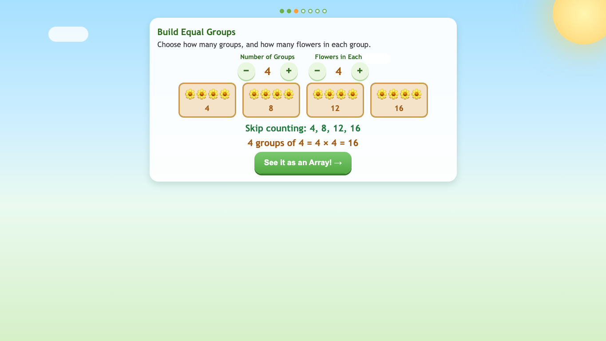
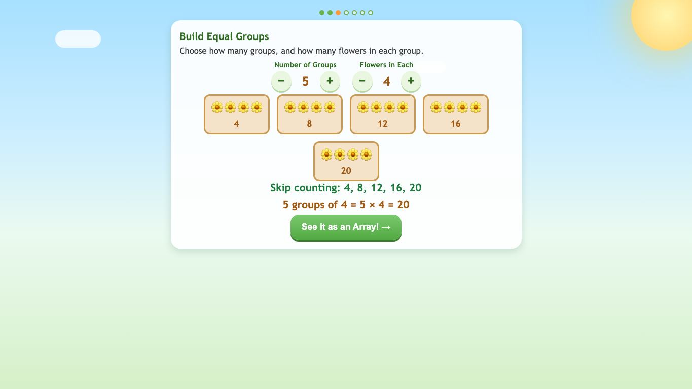
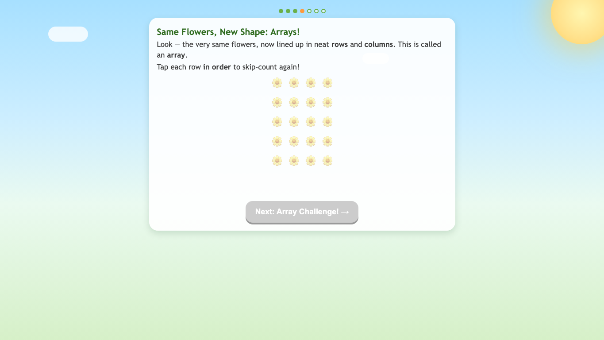
Evaluator judgment
{
"candidateId": "scenario-1-concept-only",
"verdict": "mediocre",
"scores": {
"designQuality": 3,
"originality": 2,
"craft": 3,
"functionality": 3,
"learningIntegration": 3,
"replayAppeal": 2
},
"evidence": [
"The pot-tapping interaction in 'Equal Groups' is just tapping boxes in a fixed left-to-right order to reveal running totals (4, then 4,8) — no actual grouping, dragging, or building is happening, it's a glorified reveal-the-number click sequence.",
"The array screen ('Same Flowers, New Shape: Arrays!') presents a static 5x4 grid of flower emojis with no visible rows/columns interaction state shown in the final screenshot — the instruction says 'tap each row in order to skip-count' but the screenshot shows no counts, highlighting, or feedback, suggesting the row-tapping may just repeat the same passive reveal pattern as the pots.",
"The trace shows the user clicked a '+' button under 'Number of Groups' twice and it 'did not appear to change the displayed value from 4 to 5' per the explorer's own note — indicating a possibly broken or unresponsive control in the 'Build my own' stage.",
"Progression is entirely linear and gated by a grey 'Next' button that seems to require sequential clicking in the given order rather than genuine problem-solving; there is no indication random or out-of-order clicking would be prevented or would fail differently."
],
"critique": "This is competent, pleasant-looking content, but it reads as an equal-groups-and-arrays quiz wearing a gardening costume rather than a mechanic where multiplication is the central active gesture. The 'tap pots in order' interaction in the first stage is just sequential clicking to reveal pre-set totals (4, then 4,8) — there is no moment where the child actually constructs a group, drags a flower, or makes a choice with consequence; it's the same generic reveal-button pattern the harbor and tidepool activities were rejected for, just re-skinned with sunflowers. The transition to arrays is visually tidy (rows and columns are genuinely laid out as a grid, which is good), but the final captured screenshot shows a static grid with no evidence that tapping rows produces any distinct running-count feedback like the pots did — so it's unclear whether this stage's interaction differs meaningfully from stage one, or whether the world 'disappears' during play as in the harbor quest critique. The 'Build my own' stage's '+' control for Number of Groups appears unresponsive across two clicks in the trace, which is a functionality red flag — if the core lever of an equal-groups builder doesn't visibly respond, the promised hands-on construction of arrays becomes just a label, echoing the previous harbor failure where mechanics were nominal rather than tangible. The math concept (equal groups → skip-counting → arrays) is pedagogically sound and sequenced logically, and the sunflower/garden art is charming and legible, but nothing here reaches the emotional or visual payoff of Skyglider or Comet Trail: there's no dynamic build-up, no consequence for wrong taps, and no visible celebratory or corrective feedback loop. Replay appeal is low since the sequence is fixed and mostly passive-reveal; a child could likely tap through in order without deeply engaging with the underlying multiplication logic, similar to the 'answer-button quiz in a costume' pattern flagged before. Given the possible broken +/- control and the passive click-to-reveal core loop, this sits at polished-but-shallow territory rather than genuinely inventive.",
"nextMove": "refine"
}scenario-2-profile
Scenario 2 — concept plus factual child profile
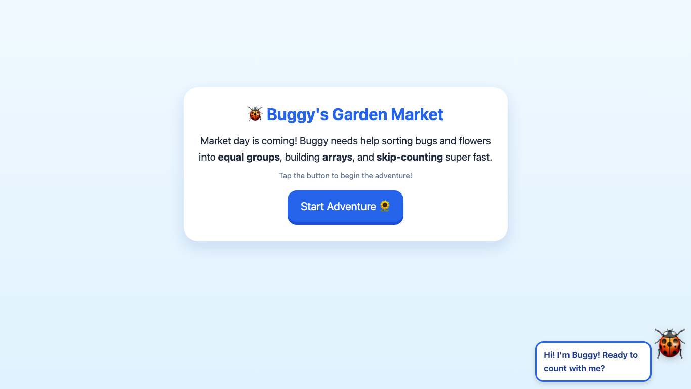

Evaluator judgment
{
"candidateId": "scenario-2-profile",
"verdict": "reject",
"scores": {
"designQuality": 2,
"originality": 1,
"craft": 1,
"functionality": 1,
"learningIntegration": 1,
"replayAppeal": 1
},
"evidence": [
"All four screenshots across the trace are pixel-identical to the intro screen showing only the title, description text, and 'Start Adventure 🌻' button — no progression occurred.",
"The exploration trace shows three separate attempts to advance (click_text twice, click_at directly on the button's coordinates) and all three are logged 'ok: true' yet the final visible text is unchanged from the very first screen, confirming the app is stuck and never reaches any actual multiplication task.",
"Console log is empty, meaning there's no error surfaced to explain the failure, but the functional result is the same: no equal-groups, arrays, or skip-counting content was ever reached or demonstrated."
],
"critique": "There is nothing here to evaluate as a learning experience because the app never leaves its splash screen. The concept description promises equal groups, arrays, and skip-counting, but three independent attempts to start the adventure (including a direct coordinate click on the button) all land back on the identical intro screen. This isn't a case of shallow answer-button quizzes wearing a costume — it's worse: the costume never even opens. There's no world, no interaction, no math being modeled, no feedback loop, and no evidence the game state machine works at all. The Buggy mascot's chat bubble ('Ready to count with me?') is the only hint of personality, but it's decorative dressing on a completely non-functional shell. Whatever visual polish exists in the card layout and color scheme is irrelevant if a child cannot press the button and progress. This fails at the most basic level: functionality. I can't assess design quality, originality of mechanics, or mathematical integration because none of that content was ever reached in the trace. Compared to the positive calibration examples (Skyglider, Comet Trail) that delivered visible math action and emotional payoff, or even the negative examples that at least allowed play to happen (just blandly), this candidate doesn't clear the bar of merely opening its first task screen.",
"nextMove": "pivot"
}scenario-3-profile-and-spelling
Scenario 3 — profile plus factual spelling success


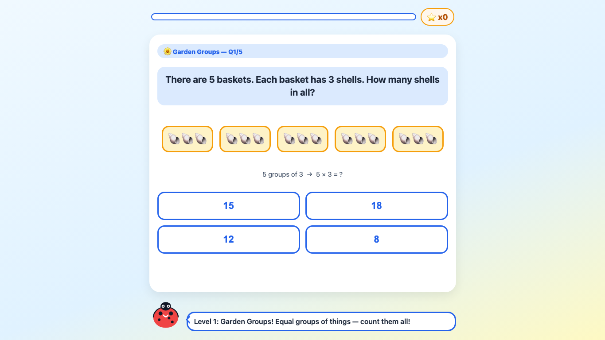
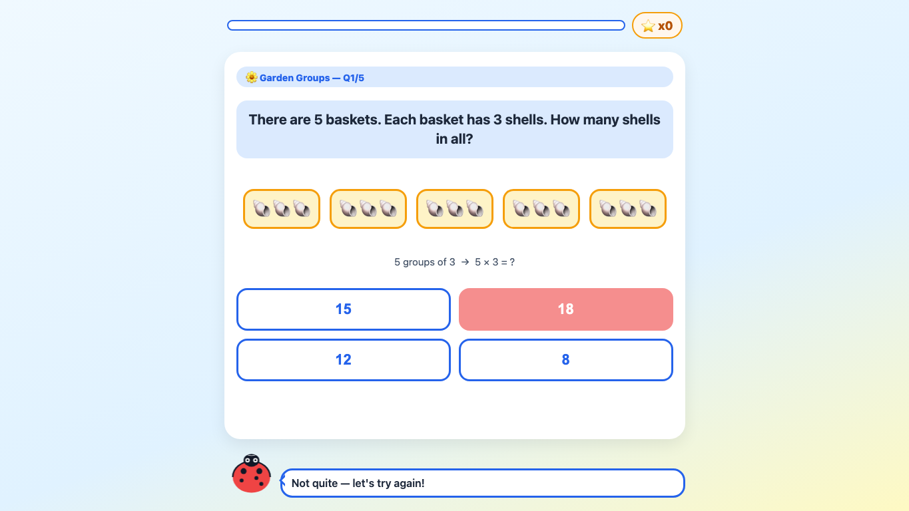
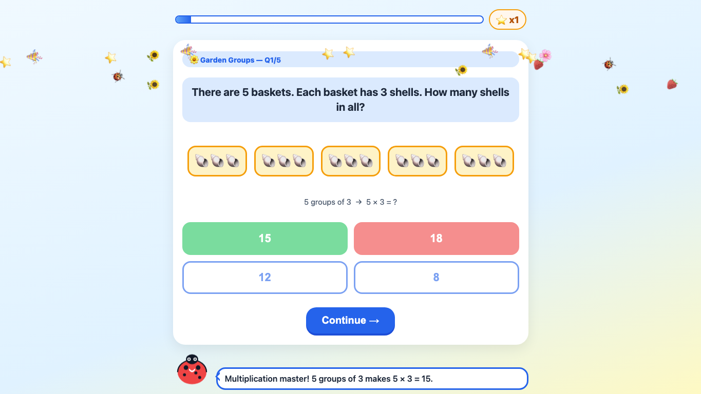
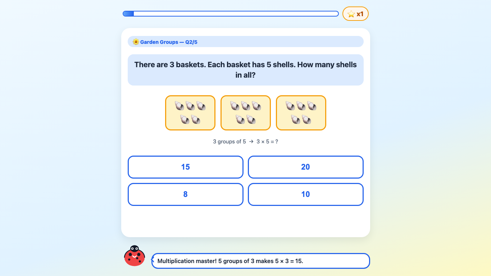
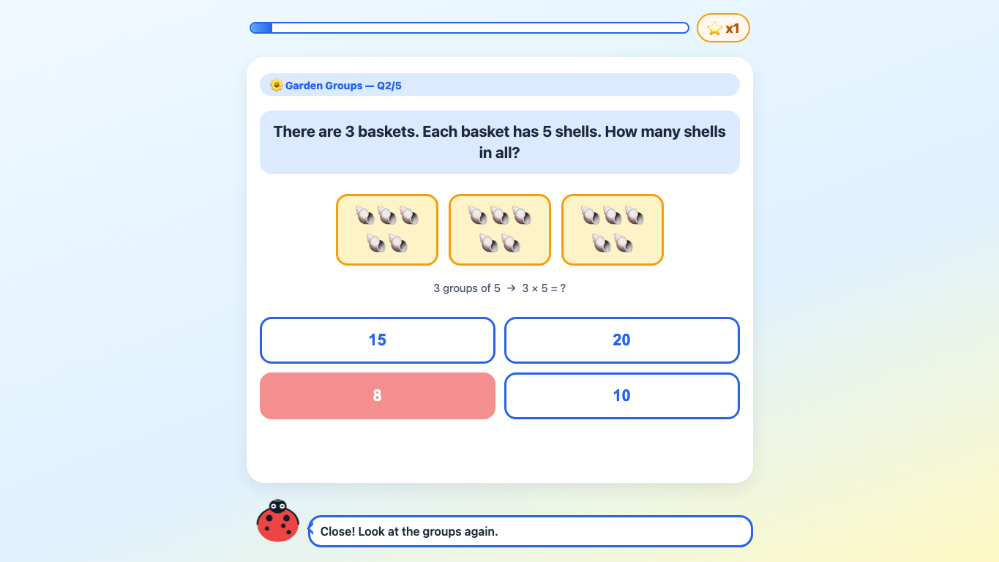
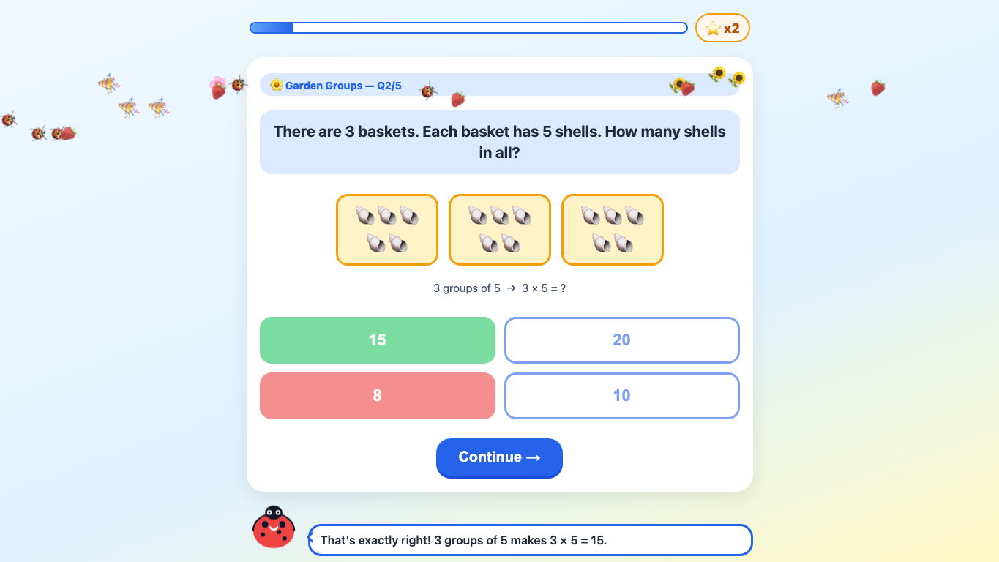
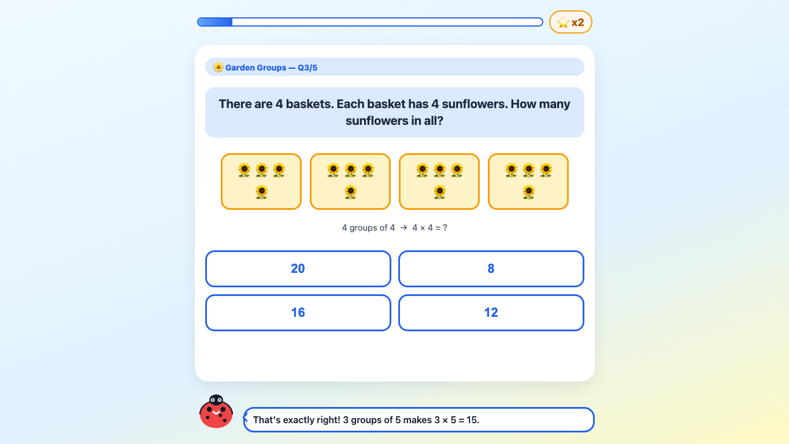
Evaluator judgment
{
"candidateId": "scenario-3-profile-and-spelling",
"verdict": "reject",
"scores": {
"designQuality": 2,
"originality": 1,
"craft": 2,
"functionality": 2,
"learningIntegration": 2,
"replayAppeal": 1
},
"evidence": [
"Every question screenshot shows the identical structure: a sentence problem, a static row of emoji-in-boxes (strawberries, shells, sunflowers), a restated equation line ('X groups of Y → X × Y = ?'), and four generic answer buttons in a 2x2 grid — this is a plain multiple-choice quiz with a rotating emoji skin, not an interactive array/group builder.",
"The emoji groupings are decorative rather than participatory: nothing suggests a child can tap groups, build the array, or skip-count through it — clicking one of four static buttons is the entire interaction, meaning random guessing across 4 choices can defeat each question.",
"Feedback is generic and even buggy: after correctly answering the 4x4 sunflower question, the ladybug's dialogue still reads 'That's exactly right! 3 groups of 5 makes 3 x 5 = 15' — leftover text from the previous question, showing sloppy state management/craft rather than polish.",
"Progression is just a star counter (x2) and a thin progress bar filling by fixed increments; there is no visible payoff, animation, or garden-building feedback tying the 'Ladybug's Multiplication Garden' theme to the actual math being solved — the garden framing evaporates during play exactly like the harbor-quest precedent."
],
"critique": "This is polished-looking but structurally identical to the previously rejected 'answer-button quiz wearing a costume' pattern. The opening screen promises a 'Multiplication Garden' with groups, arrays, hops, and stories, but once play begins, every level reduces to the same format: a static image of pre-counted emoji groups, a restated equation, and four button choices. The garden imagery is inert — it does not respond to taps, doesn't build as the child answers, and offers no tactile connection between counting groups and multiplying (e.g., no drag counting, no building the array by clicking cells, no skip-count trail). The core promise of connecting multiplication to skip-counting is never demonstrated in the trace; the 'groups of' language appears only as static text under a picture. Worse, the recycled/incorrect feedback line ('3 groups of 5' shown after correctly answering the 4x4 question) is a functional bug indicating shallow state tracking, undermining trust that the app is truly evaluating each answer contextually. There's no visible penalty or nuance to wrong answers beyond a red flash — a child could rapid-fire through all four options and eventually stumble into credit, since nothing prevents guess-and-check. Given the calibration against Moonlit Cargo/Tidepool/Harbor-quest precedents — attractive scenery around ordinary answer buttons, world disappearing during play, labels rather than tangible mechanics — this candidate fits squarely in that negative bucket rather than the Skyglider/Comet Trail positive bucket, which delivered genuine visual centrality of the math action and emotional payoff.\",\"This is generic, not exceptional; it should be substantially reworked so that group-building or skip-counting is an actual manipulable mechanic, and the feedback text bug must be fixed.\"",
"nextMove": "pivot"
}scenario-4-evaluator-refactor
Scenario 4 — evaluator-guided refine of scenario-1-concept-only
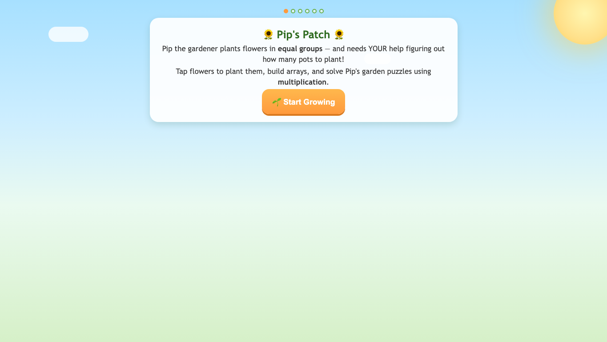
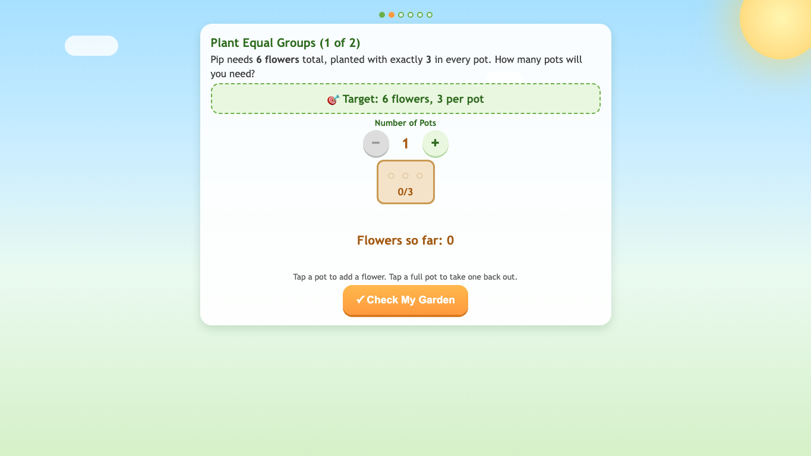
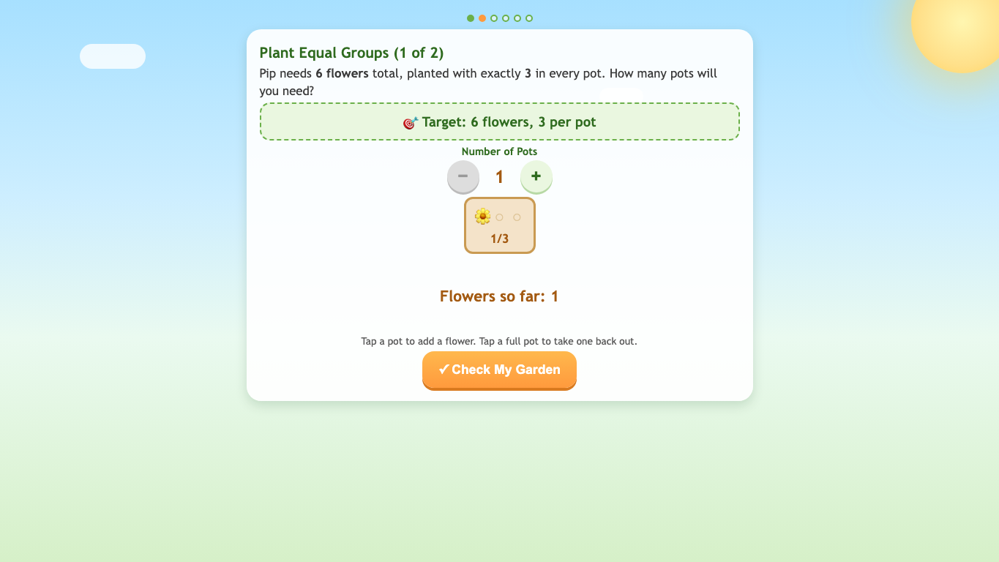
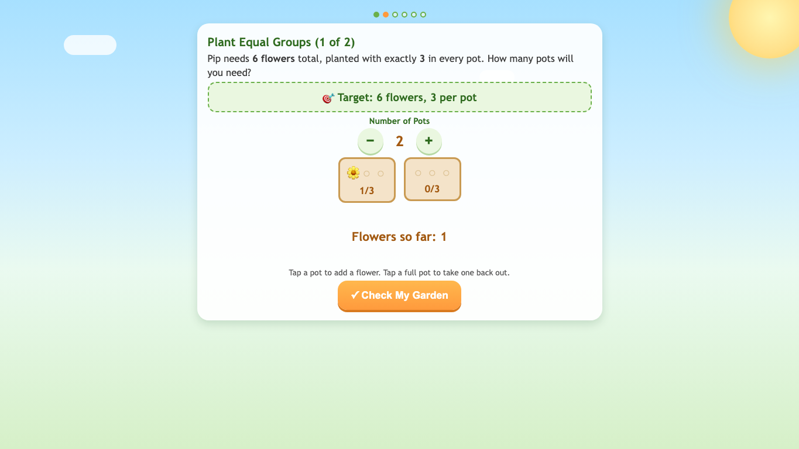
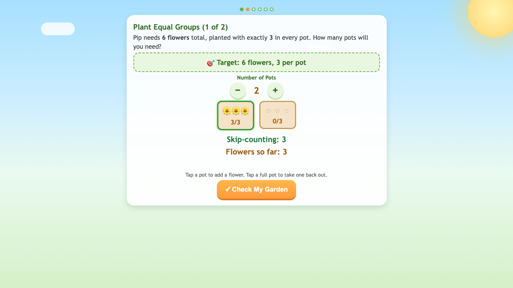
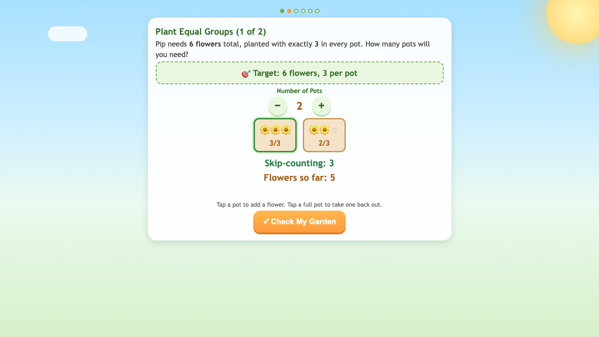
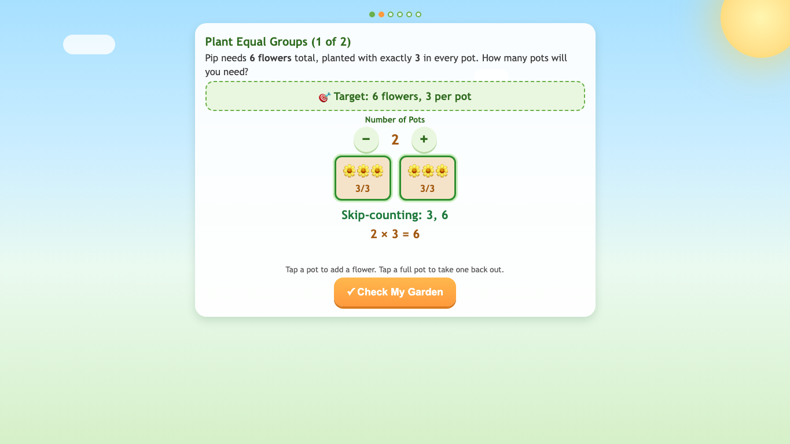
Evaluator judgment
{
"candidateId": "scenario-4-evaluator-refactor",
"verdict": "mediocre",
"scores": {
"designQuality": 3,
"originality": 2,
"craft": 3,
"functionality": 4,
"learningIntegration": 3,
"replayAppeal": 2
},
"evidence": [
"Screenshots show the core interaction is a stepper (+/- for pot count) combined with tapping small pot icons to fill flowers one at a time -- functionally a counting/increment widget rather than an array or spatial equal-groups builder.",
"The final screen auto-displays 'Skip-counting: 3, 6' and '2 x 3 = 6' the moment 3/3 is reached in both pots, which is the answer being handed to the child rather than something they had to reason out or construct themselves -- the multiplication fact appears as a reward label, not as an integrated action."
],
"critique": "The visuals are clean and the pot/flower motif is cute, but look closely at what the player actually does: increment a pot counter with +/-, then tap each pot repeatedly to fill it to a fixed capacity (3/3). This is arithmetic-by-tapping wrapped in a garden skin -- structurally identical to the 'answer buttons in a costume' pattern the calibration set flags as bland (Moonlit Cargo, Tidepool). The 'array' promised in the concept description never appears as a visual grid; pots are just containers with a counter, not a 2D array a child can see rows/columns in. Once both pots hit 3/3, the game immediately reveals the skip-count sequence and the multiplication sentence unprompted -- this is unearned payoff: the child didn't have to notice the skip-counting pattern or state the equation, it was just printed for them. There's no visible feedback for a wrong guess, no consequence exploration (what happens if you pick 3 pots or 1 pot before checking?), and the \"Check My Garden\" button is never actually pressed in the trace, so we don't know if there's a meaningful validation step or just a pass-through. The world (Pip, sunflowers, sun) is decorative chrome around the intro/outro screens but during actual play it reduces to numeric counters and small emoji icons -- the garden theme doesn't participate in the math the way the target level examples (Skyglider, Comet Trail) integrate the visual world into the answer mechanic itself. This reads as competent but generic instructional software: functional, not exceptional, and a child mashing + and tapping pots could stumble into the right configuration without deliberately reasoning about 'groups of 3'.",
"nextMove": "pivot"
}